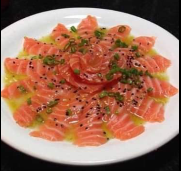
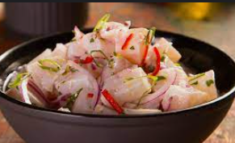

| Restaurante TECH | |||||
|---|---|---|---|---|---|
| Sejam bem vindos ao RESTAURANTE TECH. Nosso objetivo é garantir sua felicidade e satisfação | |||||
| Entradas | Pratos Principais | Sobremesas | |||
|  |
R$ 35.50 Sassaki: Salmão com molho citrico e geleia de pimenta |

|
R$ 55.55 Barca: Variados de peixe e Sushi |

|
R$15.50 Sushi doce: Sushi de babana frito. |
|  |
R$ 22.50 Ceviche: Peixe cru marinado no suco de limão com temperos frescos. |

|
R$ 35.55 Teppan de salmão: Salmão grelhado com legumes |

|
R$20.00 Sushi doce: Sushi de morango com calda de chocolate |
|
Contatos Av. João Paulo - Bairro Freguesia do Ó Telefone para contato - (11)9786-6879 Sugestões: restaurantesashi@gmail.com |
|||||